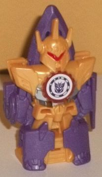
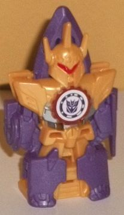

Allegiance : Decepticon
Size : Mini-Con
Difficulty of Transformation : Very Easy
Color Scheme : Dark brownish red, black, and some silver and dark metallic purple
Individual Rating : 4.5
Set Price
: $15 U.S.
Overall Rating
: 5.5
(NOTE: Because this set is composed mostly
of repaints, this is not a full-blown review. This mainly covers any changes
made to the relevant molds and their color schemes, and merely compares
them to the original versions of these molds. For a review on the single-packed
version of Bashbreaker, go
here
. For a review
on the single-packed version of Lord Doomitron, go
here
.)
 Bashbreaker
Bashbreaker
Allegiance
: Decepticon
Size
: Mini-Con
Difficulty of Transformation
: Very
Easy
Color Scheme
: Dark brownish red,
black, and some silver and dark metallic purple
Individual Rating
: 4.5
Bashbreaker here has
gotten a "Decepticon" version for this multi-pack. (I kinda like the idea
of the Weaponizer Mini-Cons turning different colors depending on whether
they're being used for good or evil.) His main color by far-- particularly
from a frontal view-- is a dark, brownish red that looks a bit rusty. It
suits a hammer quite well, all things considered, even if it is a bit dull.
His other main color is black, mostly used on his back and shoulders. It
serves as an okay neutral color for the reddish brown to contrast off of,
but it doesn't really add much to the overall scheme. For paint apps, Bashbreaker
has some silver paint on his face, as well as a really nice shade of dark
metallic purple on his eyes and his "mohawk". (I really wish this metallic
purple was used more on the toy, as not only does it go great with the
rusty brownish red, it's very Decepticon-y, too.) Unfortunately, that's
it as far as paint apps go. Double-unfortunately, Bashbreaker is one of
the two Mini-Cons in this pack that doesn't come with any armor pieces,
making him kind of bland overall.
No mold changes have
been made to this version of Bashbreaker.
 Dragonus
(Weaponizer)
Dragonus
(Weaponizer)

Allegiance
: Autobot
Size
: Mini-Con
Difficulty of Transformation
: Very
Easy
Color Scheme
: Moderately dark semi-metallic
blue and some moderately dull red and white
Individual Rating
: 6.6
Like with
Slipstream
,
Dragonus' Weaponizer version uses the same basic design and transformation
of his
original version
, but it's almost completely
a new mold regardless. In alt mode, instead of merely being a torpedo "shell",
this shell is now detailed to look like a railgun. It's a great alt mode
for a Weaponizer, and generally looks good-- the two long prongs on the
front have several diagonal lines on them, and there's LOTS of mechanical
details molded into the main body of the toy. A gear detail around the
Autobot symbol (looks like Dragonus has switched sides), circuitry lines
and tubes near the back, an angled front with several more diagonal lines,
and what look like "headlights" near the sides... it all comes together
quite well. Other than the little dragon feet sticking out just a bit below
this mode, there's no beast mode extras either (and the dragon feet are
pretty minor as well, only barely sticking out and pretty acceptable on
a Mini-Con-priced toy). What was the tail on the original Dragonus is now
a handle for this mode, so a larger 'bot can hold Dragonus in its fist.
Dragonus' core color scheme this time around is a moderately dark blue,
with a semi-metallic sheen to it because there's a bit of glitter mixed
in with the plastic-- it's a pretty nice shade, but unfortunately as with
many Mini-Cons, there's very little paint. In this mode, just a bit of
some very dull red paint is there on the top of the railgun bits, and then
a titch of the same shade of plastic on the sides can be seen, as well.
It's especially a shame given all the excellent mold detailing on the toy.
As with the original
toy, just pull the alt mode apart into two halves and fold them back, and
the rest of the toy auto-transforms. The railgun-wings are a pretty neat
look, if not QUITE as convincing wing-wise as on the original, due to more
of them not being a horizontal covering for the toy and looking more like...
well, like halves of a gun. The same proportions exist here as on the original
Dragonus toy as well, with tiny little feet, a long neck with a slim dragon
head, and two pieces attaching each wing to the main body. (As mentioned
before, the longer tail has been replaced with a handle, giving Dragonus
a shorter tail in this mode comparatively.) Despite Hasbro easily being
able to get away with leaving the core dragon body and head the same if
they wanted to, they're completely new pieces; the body contains much of
the same mold detailing from the center-rear portion of the gun mode, and
the dragon head and neck have a much more "mechanized" look to them. The
head is simpler, with a a bit of an underbite and angular, simple ears,
with some segmented angular detailing along the neck. It's an improvement,
in my opinion. The small dragon feet are also much more robotic-looking
as well, with the claws being more angular and pointed and some more minor
mechanical details on the bottom of the body. Although still very blue
in this mode, the red is a bit more apparent, being the color of the four
plastic bits that connect the wings to the body, and the eyes are painted
white as well. For articulation, the head can move SLIGHTLY side-to-side
at the base of the neck, but that's it.
 Lancelon
Lancelon
 

Allegiance
: Decepticon
Size
: Mini-Con
Difficulty of Transformation
: Very
Easy
Color Scheme
: Milky pale orangish
"cheesy" yellow, milky semi-metallic purple, transparent red, and some
silver, red, dark maroon
Individual Rating
: 4.7
Because so much of his
weapon mode depends on comments made about his robot mode, I'll talk about
that aspect of Lancelon first. Lancelon has a very "knight-y" look, with
a three-pronged helmet with a tiny red visor; small dagger and sword details
coming off his relatively small, short arms; and some sleek armor-like
details on his shoulders and waist. Like the other Weaponizer Mini-Cons,
he has a gear detail around his chest. He's got a few minor detailed angles
on his legs, but they're relatively sparse when it comes to mold detailing
compared to the rest of him. His proportions are relatively good overall,
fitting in with the slightly chibi-fied proportions of a RID2015 Mini-Con
when looked at from the front. Unfortunately, Lancelon is essentially a
figure that's
only
made to be looked at from the front in this mode.
Turn him to the side, and you'll see two long pegs sticking out of his
back, and just how 2-D and a "front" most of his robot bits are-- the bulk
of the mass is actually behind his body details in this mode, where his
weapon mode has retracted into a large sleeve behind those robot mode details
on the front. He doesn't look like he can remotely move or articulate (and
indeed, he cannot move at all in this mode), and he's got a big division
in between the front and back halves of his body. So... yeah, just look
at him from the front. For a color scheme, he's got a somewhat pale version
of an orangish-yellow "cheese" shade that makes up most of his main body,
while a milky semi-metallic purple makes up his appendages and a bit of
the tip of the lance that pokes out behind his head. This latter shade
is quite nice with a bit of glitter in it, and certainly looks quite Decepticon-y.
It's a decent, basic color scheme, although making the shades a bit darker
or bolder would've looked better. As with most Mini-Cons, there's very
little paint on him-- beyond the aforementioned red visor, there's some
silver paint on his lower chest and abs and a dull maroon color on his
chest gear detail-- all of which go okay with the orange-yellow on his
main body-- but that's it.
Lancelon's transformation
is very simple-- just flip down his handle below his legs and then move
up the purple slider on his back-- this makes the purple parts fold apart
and up before collapsing together again to form the blade. Basically this
means that the bottom half of this mode is his orange-yellow robot mode
minus his appendages-- and with the head partially covered up-- while the
top half is a pretty solid purple blade, with the arms and legs somewhat
visible near the middle and upper sides of this mode. I do wish there was
less "body" to this alt mode and more of an actual blade-- he is meant
to be a lance, after all, not a dagger-- but it's decent. The arms and
legs fold into the main silhouette so well I honestly don't really mind
them. Plus, Lancelon can either be held by the handle sticking below his
legs, or you can peg him onto a larger 'bot by the slider on his back,
giving you a choice of two possible ways he can be wielded. For transparent
armor parts, Lancelon's are translucent red, which is a pretty nice color
that contrasts against the orange-yellow particularly nicely-- and given
how they're used, they really do look like protrusions made of Energon.
Lancelon's got a wickedly detailed armor piece that fits over his chest
and head, making him look quite eeevil for a knight with all its intricate
angular detailing. His other four armor pieces are long, skinny, angular
pieces that fit into slots on the sides of his lower arms and in between
his shoulders. In robot mode, this makes him look more like he's got red
lightning coming out of his body and arms, whereas in lance mode, this
greatly enhances the sharp, intricate look of his blade, giving him several
more edges and making the general "triangle" shape of the blade larger.
None of the pieces pop out easily, either, and all of them can fit on in
both modes, so these are pretty solid additions to Lancelon.
 Lord
Doomitron
Lord
Doomitron

Allegiance
: Decepticon
Size
: Mini-Con
Difficulty of Transformation
: Very
Easy
Color Scheme
: Orangish "cheesy"
yellow, transparent light red, light forest green, and some dark red
Individual Rating
: 6.0
This redeco really makes
me think Lord Doomitron-- despite being a remold of the
Mini-Con
Bludgeon
-- was the one originally meant to be called Bludgeon. His
main color this time around is the very Bludgeon-y color of a cheesy yellowish
orange, used on pretty much all of his weapon mode and on his main body,
shoulders, and most of his head in robot mode. His other main color is
a really eye-catching shade of light forest green, which is just a fantastic
shade and contrasts excellently with the yellow (it's used mostly on his
lower legs and arms). Green has also been tied to many versions of Bludgeon
over the years, as is the transparent plastic used for Lord Doomitron's
armor parts-- light red. The light red, needless to say, looks VERY good
on the flame bits on Doomitron's shoulders, and works decently on his evil
face-chest armor, small blades on his robot arms, and big blade on his
weapon mode. It complements the yellow pretty nicely, though it and the
green are a bit too light to work off each other. For paint apps, Lord
Doomitron has a green face, with dark red paint used on both his robot
mode eyes and the weapon mode "eyes" on those very evil-looking chest details
of his. All in all, ignoring the Bludgeon homage (if that was indeed the
intention), it's a decent color scheme, although not nearly as fitting
on the mold as on the single-packed version of this toy.
No mold changes have
been made to this version of Lord Doomitron.
The third and final Mini-Con
4-pack-- which is also the only one to consist completely of Weaponizers--
is a bit of a mixed bag. Lord Doomitron and Dragonus are pretty solid,
though the color schemes on their single-pack versions are definitely better.
Lancelon and Bashbreaker have color schemes that are more or less in line
with their single-pack versions in terms of how much I like them, but they're
both some of the weaker Weaponizer Mini-Con molds. IF you have easy access
to the single-pack versions of these molds-- which is a huge qualifier,
given how rare they were to find even at the time they were out-- AND you
don't want multiple Weaponizers of the same mold, this pack is a skip.
If, however, you're like most people and this is the only version of these
Mini-Cons you have remotely easy access to, well, here they are.
Reviews by Beastbot